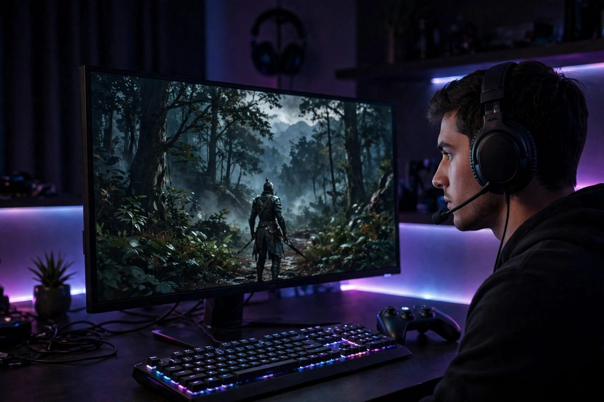

Internet Speed for Gaming: How Much Do You Really Need?

Many gamers assume that a faster internet plan will make them better at their favourite game. In truth, online gaming uses surprisingly little speed, and buying a gigabit plan will not fix lag on its own. What matters far more is ping, the stability of your connection, and how much of your bandwidth is left over for everything else in the house. This guide explains how much speed gaming really needs, why ping matters more, and what to fix when your games feel slow.
How Much Speed Does Gaming Actually Use?
During a match, most online games use only 0.5 to 3 Mbps of download speed and even less upload, because they send tiny updates about player positions and actions rather than large files. That means even a modest 25 Mbps connection has plenty of room for the game itself. The official minimums from console makers are low: around 3 Mbps download and 1 Mbps upload for basic online play. The speed you really need depends on what else happens at the same time. If someone is streaming 4K video in the next room while you play, that stream alone can take 25 Mbps, and a game download or update can swallow your whole connection for an hour.
| Activity | Download needed | Upload needed |
|---|---|---|
| Online gaming (one player) | 3 to 5 Mbps | 1 to 3 Mbps |
| Gaming plus voice chat | 5 to 10 Mbps | 3 to 5 Mbps |
| Gaming while someone streams 4K | 50 Mbps or more | 10 Mbps or more |
| Game downloads and updates | 50 to 100 Mbps | Not important |
For most households, a 100 Mbps plan is a comfortable sweet spot for gaming. It leaves room for the game, voice chat, and another person streaming at the same time. A faster plan mainly helps with one thing: downloading games and updates more quickly, since modern games can be 100 GB or larger. Our what is a good internet speed guide covers general household needs in more detail.
Ping Matters More Than Speed
Ping is the delay between your device and the game server, measured in milliseconds, and it decides how quickly your actions register in the game. With a ping of 20 milliseconds, your shot fires almost instantly. With a ping of 150 milliseconds, you can be aiming at an opponent who has already moved, and you will lose fights that you should have won. Competitive players aim for ping under 30 milliseconds, while anything under 60 is fine for most games and anything over 100 feels sluggish. Unlike download speed, ping cannot be fixed by buying a faster plan. It depends on your distance to the server, the quality of your line, and whether you are on Wi-Fi or a cable. Our guide to what ping is and why it matters explains this in depth.
Jitter and Packet Loss Ruin Games Too
Even with low average ping, a connection that keeps varying will feel bad. Jitter is the variation in ping from one moment to the next, and packet loss is data that never arrives at all. Both cause rubber-banding, where your character snaps back to an earlier position, and actions that seem to happen twice or not at all. These problems are common on congested Wi-Fi and on lines with a fault, and they are the first thing to check when a game stutters despite a good speed test. Our guide to jitter and packet loss explains both in plain English.
Wi-Fi or Ethernet for Gaming?
Whenever possible, plug your console or PC into the router with an ethernet cable. A cable gives you lower ping, steadier jitter, and no interference from walls, neighbours, or the microwave. Wi-Fi has improved a lot, and a strong 5 GHz signal in the same room as the router can be fine for casual play, but it will always add a few milliseconds of delay and occasional spikes. If a cable is not possible, keep the router close, use the 5 GHz band, and avoid playing at the far end of the house. Our Wi-Fi vs ethernet comparison covers the trade-offs in more detail.
How to Lower Lag Without Upgrading
Before you pay for a faster plan, try the free fixes. Use a cable, close downloads and cloud backups while you play, and pick the nearest game server in the game's settings. Restart your router once a week, and check for firmware updates. If several people share the connection, ask your router's quality-of-service settings to prioritise gaming traffic, if it supports it. For a full step-by-step list, see our how to lower ping in games guide.
The bottom line is simple: gaming needs a steady connection, not a huge one. A 100 Mbps plan with low ping and a wired connection will beat a gigabit plan on weak Wi-Fi every time. Test your connection with our speed test tool, check your ping rather than only your download speed, and fix the weak link before you spend money on an upgrade.
Frequently Asked Questions
Is 100 Mbps enough for gaming?
Yes, for most households. The game itself uses only a few Mbps. 100 Mbps leaves plenty of room for voice chat and someone else streaming at the same time.
What ping is good for gaming?
Under 30 milliseconds is excellent for competitive play, under 60 is fine for most games, and over 100 will feel laggy.
Does a faster internet plan reduce ping?
Not directly. Ping depends on distance to the server and line quality. A cable connection and the nearest server region help far more than extra speed.
Test Your Connection Now
Run a free speed test and see your real ping, download and upload speeds in under a minute.
Start Speed Test